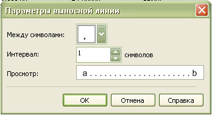
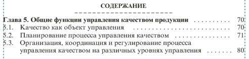

Применеие табуляции при вёрстке оглавления (содержания).
CorelDRAW предоставляет широкие возможности для работы не только в области графики, но и для вёрстки.
В этом уроке рассматривается применение табуляции на примере вёрстки оглавления или содержания книги.
Особенность табуляционного отступа не только в том, что это большой отступ одним нажатием на установленное расстояние, а в том, что это отступ на установленную позицию (то есть определённое расстояние от начала строки. Это бывает удобно при оформлении текстовых фрагментов в виде небольших таблиц без рамок. При формировании оглавления или содержания, также можно воспользоваться табуляцией, при этом оглавление будет иметь красивый вид, а работать будет удобнее и быстрее.
Итак, создайте текстовую рамку и выбирете Текст – Табуляция.
В открывшемся окне «Параметры вкладки» нажмите «Удалить все» и установите два отступа: первый – для отступа второй и последующих строк в случае, когда названия глав или разделов имеют большую длину и размещаются на нескольких строках, для этого отступа задаётся выравнивание слева; и второй отступ – для номеров страниц задаётся равным ширине текстовой рамки (текстового блока) с выравниванием справа.
На скриншоте, в последней строке списка задан отступ 170 мм, что соответствует ширине текстового блока при формате А4 и полях по 20 мм.
Не забудьте установить значение «Вкл» для выносной линии для второго отступа.
Затем нажмите «Параметры выносной линии» и

в открывшемся окне «Параметры выносной линии» установите: символ, используемый на линии между фрагментами текста и интервал (разрядку) между этими символами(здесь можно отметить, что, например, в специальной программе для вёрстки InDesign нет возможности регулировки разрядки между символами).
После набора фрагмента текста слева нажимаете клавишу Табуляция, а затем набирайте фрагмент текста справа.
Для улучшения вида строк можно в начале и конце выносной линии добавить 1-3 пробела, при этом будет происходить не трэкинг выносной линии (отточия), а будет удалено соответствующее количество символов (точек).

.")
Забыл рассказать что они изначально бывают в тексте, даже там где они совсем не нужны, и как их увидеть.
Очень полезно, спасибо!
А как поменять единицу измерения табуляции??
Не могу найти! Вместо мм - дюймы:(
arc8,
Единицы измерения в Кореле меняются для всего документа. Поэтому, кликнув на пустом месте документа (НЕ текста), изменяете дюймы на миллиметры.
В том-то и дело, что были выставлены миллиметры. Наверное, глюк - импортировал своё рабочее пространство - всё стало на место.